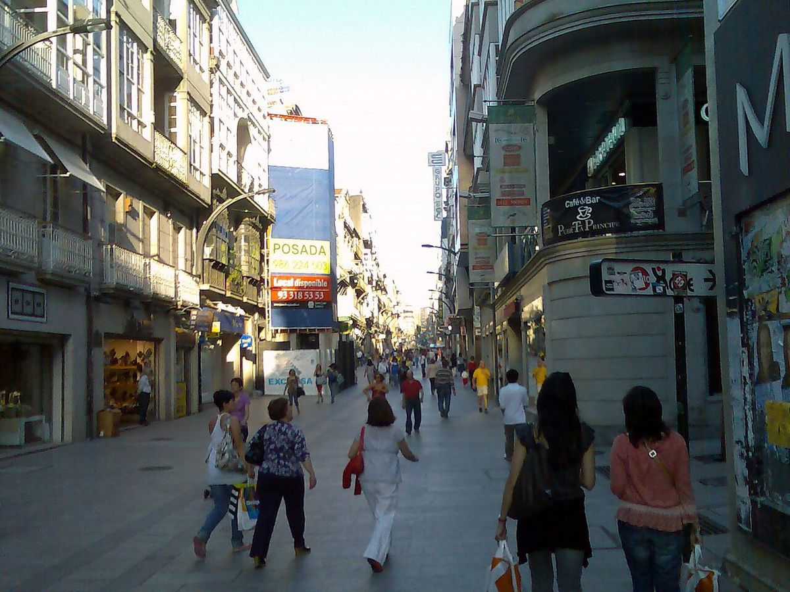

Contra su provincia · Elecciones: 2004-2023
Vigo, la gran ciudad gallega que ganó el PSOE
Vigo, la única gran ciudad gallega donde ganó el PSOE el 23J, y donde en mayo le dio el 61 %
Por Nacho G. del Álamo ·
El 23J el PP ganó en Galicia con el 43,6 %, frente al 29,9 % del PSOE. De los 22 municipios gallegos de más de 20.000 habitantes, el PSOE solo fue primero en dos: Redondela y Vigo. En Vigo sacó el 37,3 % en las generales y el 60,9 % en las municipales de mayo.
Dato: verificable y reproducible
La pregunta: ¿Dónde gana el PSOE en la Galicia del PP?
Una excepción en el mapa gallego
DatoGalicia es territorio del PP: en las generales de 2023 sacó el 43,6 % del voto, 13,7 puntos por encima del PSOE. Ganó en las otras seis grandes ciudades: A Coruña (39,9 %), Ourense (42,8 %), Lugo (46,8 %), Santiago de Compostela (41,9 %), Pontevedra (39,8 %), Ferrol (38,7 %).
DatoVigo, la ciudad más poblada de Galicia, con 292.093 habitantes, votó al revés: PSOE 37,3 %, PP 31,4 %, Sumar 16,4 % y BNG 8,5 %.
Mayo: un voto local aún más socialista
DatoEn las municipales del 28 de mayo de 2023, el PSOE sacó en Vigo el 60,9 % del voto válido. El PP se quedó en el 18,6 % y el BNG en el 11,1 %.
PatrónEntre mayo y julio, el PSOE perdió en Vigo 23,6 puntos y el PP ganó 12,8. Parte de los vigueses que eligen al PSOE para el ayuntamiento no lo eligen para el Congreso. La participación también cambió: 57,3 % en mayo y 73,1 % en julio.
No siempre fue así
DatoEn las generales de 2011, Vigo dio al PP el 43,3 % y al PSOE el 33,2 %. Desde abril de 2019, el PSOE ha quedado siempre por delante: 36,4 %, 36,6 % y 37,3 %.
DatoEl modelo de esta serie le asigna a PP, Vox y Cs un 45,1 % en Vigo; votaron un 36,1 %, 9,1 puntos menos.
Sobre el terreno
DatoVigo tiene desde 1958 una fábrica de automóviles, abierta por Citroën y hoy de Stellantis. Fuentes: 1, 2
Lo que no sabemos
- HipótesisCuánto del voto municipal de Vigo se debe a su alcalde y cuánto a la ciudad. Es la hipótesis evidente, pero necesita encuestas postelectorales o estudios que esta pieza no ha incorporado.
Dato: verificable y reproducible. Patrón: relación descriptiva, sin causa. Hipótesis: explicación posible que aún no tiene dos fuentes independientes.
Los datos
| Ciudad | PP | PSOE | Gana |
|---|---|---|---|
| Vigo | 31,4 | 37,3 | PSOE |
| A Coruña | 39,9 | 31,0 | PP |
| Ourense | 42,8 | 35,4 | PP |
| Lugo | 46,8 | 32,8 | PP |
| Santiago de Compostela | 41,9 | 25,9 | PP |
| Pontevedra | 39,8 | 31,9 | PP |
| Ferrol | 38,7 | 29,4 | PP |
Método y fuentes
- Qué se compara
- Vigo frente al conjunto de Galicia y a las otras grandes ciudades gallegas; las municipales y las generales de 2023.
- Límites
- El censo de las municipales incluye a residentes de la Unión Europea. Las siete ciudades de la tabla son las de más de 60.000 habitantes.
- Metodología completa
- Cómo se calculan los porcentajes, el modelo, los gemelos y los escaños
- Fuentes
- Ministerio del Interior, resultados electorales por mesa (Infoelectoral). Congreso 2004-2023 vía pollspaindata, commit ee5ecda; municipales 2007-2023 de los ficheros de Infoelectoral
- INE, Atlas de Distribución de Renta de los Hogares 2023 (renta, edad, población), vía ineAtlas.data
- INE, Censo de Población y Viviendas 2021 (estudios, paro, extranjeros)
- Autoría
- Nacho G. del Álamo
- Revisión de datos y texto
- Nacho G. del Álamo, 7 de octubre de 2026
- Publicado · actualizado
- 7 de octubre de 2026 · 7 de octubre de 2026
- Correcciones
- Ninguna. Historial del Atlas